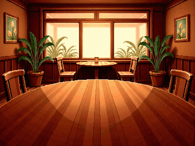
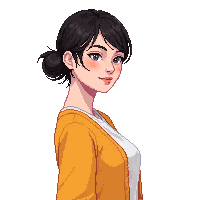
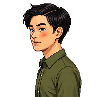
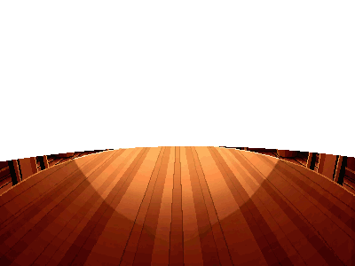

Topic 1 · Days off
You're the third seat at this table. Linh and Minh are going to talk about days off — then they'll turn and ask you. Answer out loud. If you get stuck on a word, Linh will hand it to you.